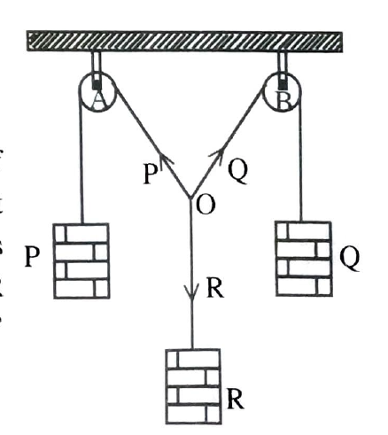

Drawing board with two fixed pulleys at its top,teine string,three sets of weight hangers with weights, protractor and set-squares.
''If two forces acting at apoint be represented both in magnitude and direction by the adjecent sides of a parallelogram drawn from that point,then their represented both in magnitude and direction by the diagonal of the parallelogram dawn from that point.''
If , the three coplanar concurrent forces P,Q and R acting at a point keep it in equilibrium,then according to the parallelogram law of forces.it can be shown that the resultant of any two three forces is equal in magnitude and opposite in direction to the third one.
If a point is in equilibrium under the action of three coplanar concurrent forces,then they can be represented in magnitude and direction by the sides of a triangle taken in order.
If a P,Q and R reoresent three forces acting on a point'O' and p,q and r indicate the lengths of sides of a triangle formed by drawing prallel lines to the three forces P,Q and R,then according to the triangle law of forces.
\(\frac{P}{p}=\frac{Q}{q}=\frac{R}{r}\)
Take three strings and make a common knot at'O'.Pass the end of two strings over two frictionless pulleys A and B which are positioned apart at the top of the drawing board fixed vertically.Suspend the weight hangers P and Q from the end of the two strings,Suspend another weight hanger R from the end of the third strings Suspend another weight hanger R from the end of the third and adjust the value of R untill the point 'O' is in equilibrium.
Attach a sheet of white paper with the help of drawing pins on the drawing board.Focus an electric lamp on to the point 'O'keeping the lamp at same height as 'O',such that a clear shadow of the 3 strings in formed on the paper.Trace carefully the position of knot and the strings with pencil. Now a Y shaped diagram,is obtained.
Represent the forces P,Q and R by OB and OD on a convenient scale from 'O' with OA and OB as adjecent sides,construct the parallelogram OACB as shown in figure.Draw the diagonal OC from O to C and measure initial-scale length.Now OC represents the resultant of the forces P and Q.The resultant(OC) and equlibrium(OD) are equal in magnitude and opposite in direction.So,if R1 is equal to the forces represented by the diagonal OC and \(\angle COD\)=1800 the parallelogram law of forces is verified
Repeat the experiment 3 and 4 times with different valued of P,Q and R and tabulate the readings.
Obtain the Y shaped diagrams as explained earlier.Draw parallel lines
OX,OY and OZ to enclose a triangle as shown in figure.Indicate the
direction of the forces on the sides of triangle by arrow
marks.Measure the sides of the triangle ABC.Let p,q,r are the length
of the sides parallel to the direction of forces P,Q,R
respectively,The experimentis repeated with different values of P,Q,R
and the reading are tabulated.
It is observed that\(\frac{P}{p}=\frac{Q}{q}=\frac{R}{r}\)
The weight hanger R is replaced by the given stone whose weight in
air(W1) is to be determined The experiment is repeated and
the parallelogram is constructed.
(a) According to pallelogram law of forces weight of the stone in air
W1 =diagonal OC x scale
The experiment is repeated with the body immersed in water and the
parallelogram is constructed.
(b)When it is immersed in water
Weight of the stone in water W2 = diagonal OC x scale.
(c) Volume of the given stone V=(W1 - W2)cm2
(d) Relative density(or) specific gravity of the
stone=\(\frac{W_{1}}{W_{1}-W_{2}}\)
Where W1=Weight of the stone in air...........gm wt.
W2=Weight of the stone in water............gm wt.
The weight 'R'is replaced by the given sone whose
weight(W1) is to be determined.
A trace of the thread is taken on white paper and draw parallel lines
to the forces OP,OQ and OR,so that they intersect and form a triangle
ABC.
According to triangle law of forces.
\(\frac{P}{p}=\frac{W}{r}\)
Weight of the stone in air \(W_{1}=\frac{P}{p} \) x r gm.
The above procedure is repeated with the body completly immersed in
water.And its weight in water is determined
If W2 is the weight of the stone in water then,
According to triangle law of forces,
\(^{W_{2}}=\frac{P}{p}\times r\, gm\)
Volume of the stone(V)=(W1-W2)cm3
Relative density of the stone= \(\frac{W_{1}}{W_{1}-W_{2}}\)